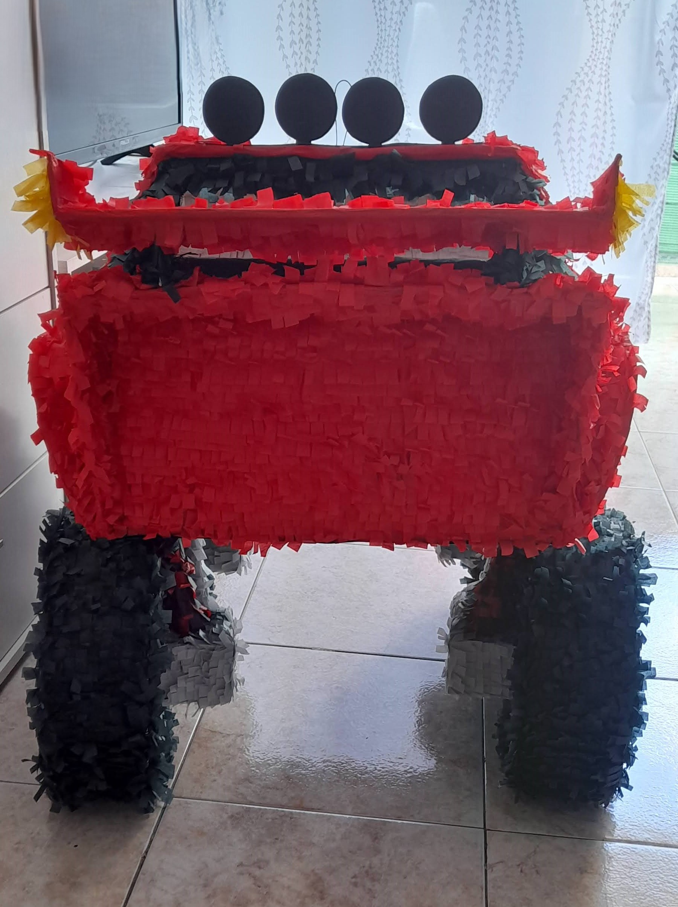
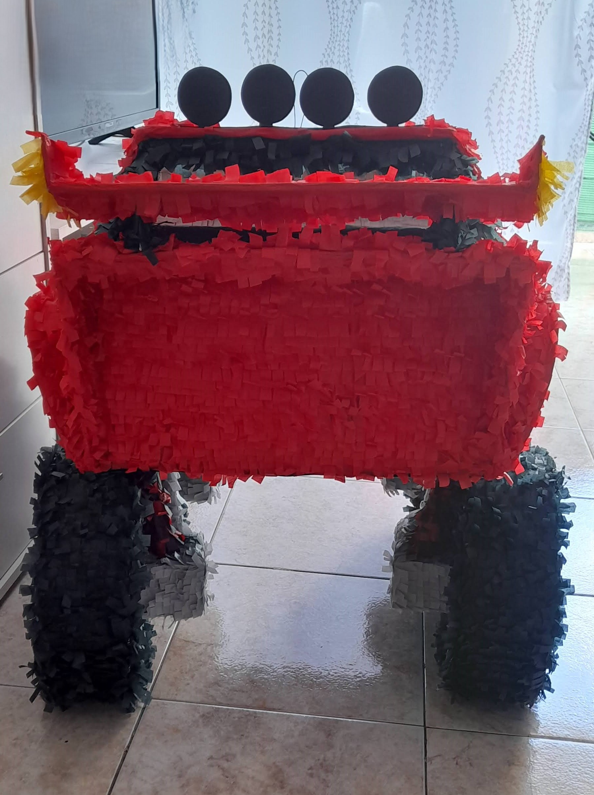
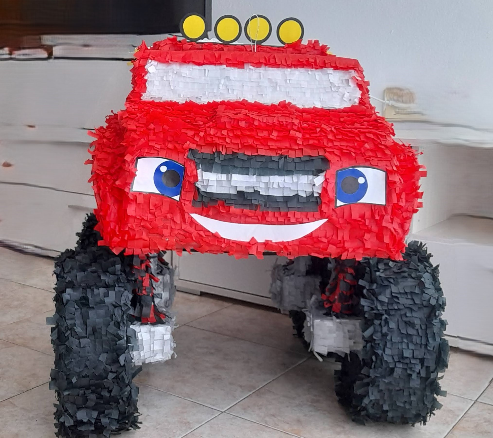
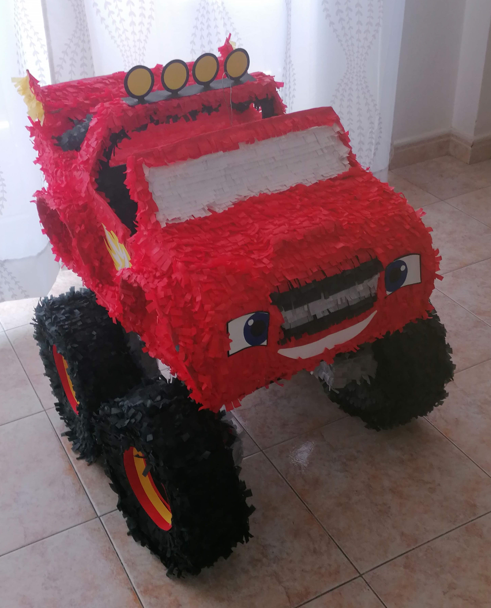

Historia de las Piñatas
Origen
El origen de las Piñatas de acuerdo con Marco Polo, se encuentra en China y en su forma original representaban animales, un ritual para recibir a la Primavera. De ahí, la tradición viajó a Italia donde adoptó el nombre de Pignatas y fue desde donde se difundió al resto de Europa.
A raíz de ello, llegó a España y como consecuencia a México (Nueva España) en la época de la conquista, en donde los frailes la utilizaron como herramienta de evangelización.
Existen indicios de que en Mesoamérica había tradiciones similares para celebrar al dios Huitzilopochtli: acostumbraban romper recipientes de barro rellenos de cacao y llenaban cazuelas de barro con tesoros y alhajas que decoraban y las rompían durante las festividades.
Aunque ha perdido su carácter religioso, la piñata sigue siendo una parte importante en la cultura latina. Es un símbolo de alegría y celebración que reúne a personas de todas las edades para compartir la diversión en cualquier evento que se celebre.
Simbolismo
- Los siete picos representan los pecados capitales:
- Soberbia: Sentimientos de superioridad que llevan al desprecio por los demás.
- Avaricia: Deseo obsesivo de acumular riquezas sin compartir con los demás.
- Lujuria: Anhelo morboso y sexual hacia otras personas.
- Ira: Furia y violencia, la disposición a hacer el mal sin consideración.
- Gula: Consumir en exceso sin considerar las necesidades de los demás.
- Envidia: Rabia por poseer menos que otros.
- Pereza: La negligencia y falta de acción por comodidad.
- Sus brillantes colores simbolizan la tentación.
- Venda en los ojos: recuerda que la fe es ciega.
- Palo con el que se rompe la piñata: es la fuerza y la virtud que destruyen los engaños y pecados.
- Dulces, golosinas y juguetes: son las riquezas del reino que se otorgan como premio a la fe y la perseverancia.
Conclusión
Las piñatas han derribado todas las barreras y trascendido fronteras, se han convertido en una tradición querida en todo el mundo. Ya sea en fiestas infantiles, cumpleaños, eventos temáticos o celebraciones de cualquier tipo.
Agregan un toque especial de emoción y alegría.
La piñata se ata al final de una polea simple fija que es controlada por una persona que ajusta la altura soltando o recogiendo el cable o la cuerda para tratar de que la persona en turno golpee la piñata para tratar de reventarla.
Disfruta de la diversión y sumérgete en el mundo de las piñatas rompiendo y celebrando con una hermosa piñata llena de color y sorpresas.
Nuestra Galería


Elaboración de las Piñatas

Procedimiento de elaboración de la Piñata
1. Preparamos la estructura con cartones, alambres y papel de periódicos.

2. Después de preparada la estructura se procede a forrar con cola y periódicos.

3. Una vez que se seca bien, empieza el proceso de forrar con papeles de colores, según el diseño.
-

4. Se visualiza el diseño, y se agregan los detalles.

5. Se montan todas las partes para darle la forma final a la piñata.
 

6. Proceso terminado se visualiza la Piñata por todos los ángulos para observar los detalles.
-  